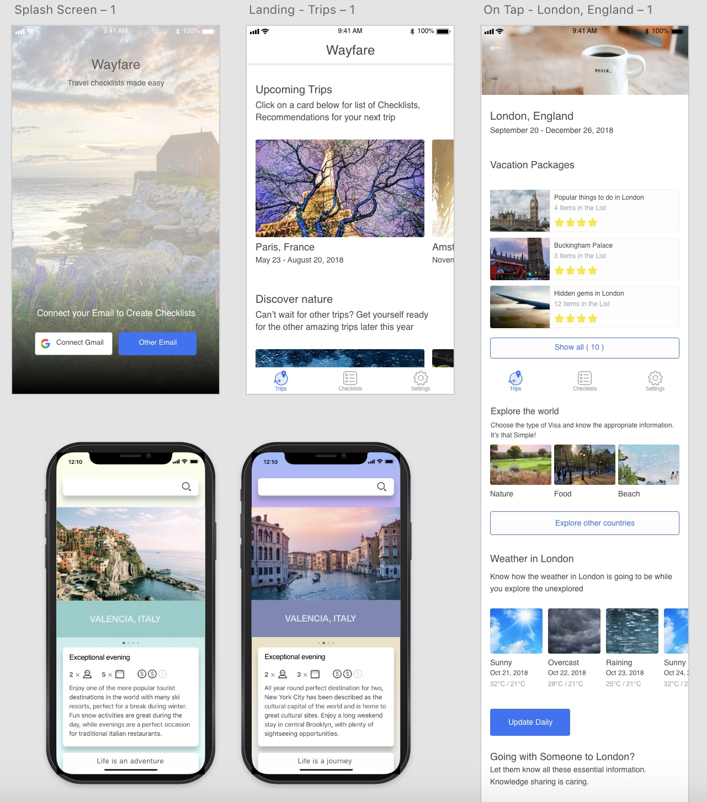
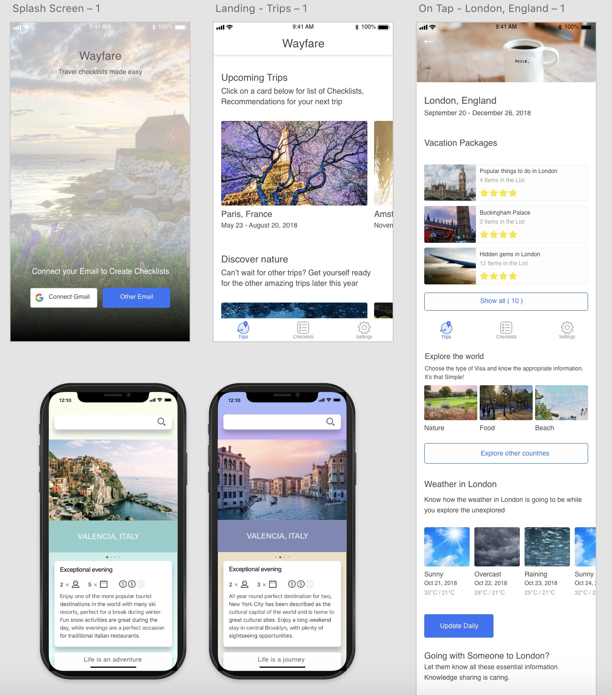
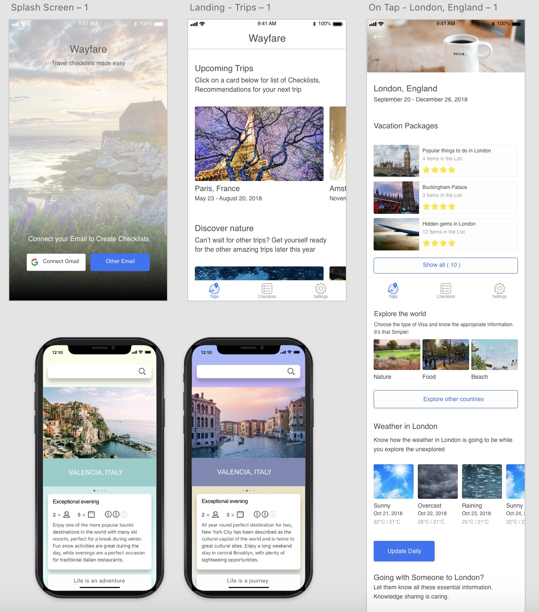

Wireframe & Prototype
 

When our three-designer team was tasked with adding functionality to Bumble, I had never opened a dating app. Our goal was to increase the amount of meaningful connections on the app and encourage users to move from messaging to dating. By the end of the project I was more aware of bumble users, built prototypes at three levels of fidelity, and tested those prototypes with 10 users. Our additions to the app were designed to reduce ghosting (abandoning conversations) and overcome the challenging fear of rejection many users face.


When our three-designer team was tasked with adding functionality to Bumble, I had never opened a dating app. Our goal was to increase the amount of meaningful connections on the app and encourage users to move from messaging to dating. By the end of the project I was more aware of bumble users, built prototypes at three levels of fidelity, and tested those prototypes with 10 users. Our additions to the app were designed to reduce ghosting (abandoning conversations) and overcome the challenging fear of rejection many users face.